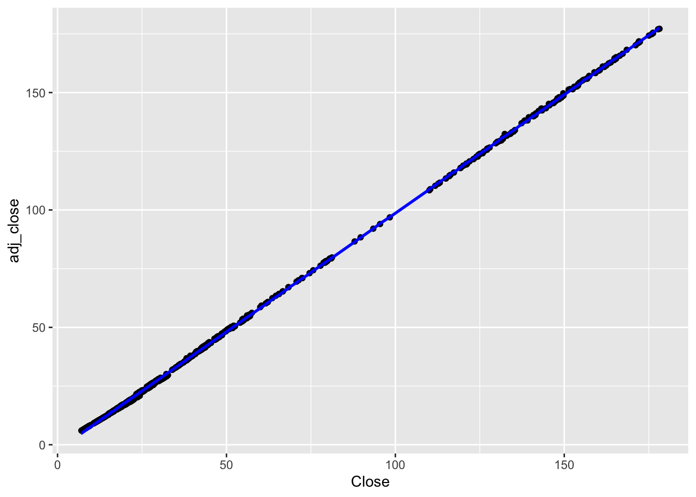

options(repos = c(CRAN = "https://cran.rstudio.com"))HW-04
Regression in R
Required Packages
install.packages("pacman")
The downloaded binary packages are in
/var/folders/fv/w3tf_3wd1wv7gc5v8fkpw3sr0000gn/T//RtmpY9ysyn/downloaded_packagespacman::p_load(tidyverse, rpart, rpart.plot, caret,
lattice, FSelector, sampling, pROC, mlbench, rsample, parsnip, yardstick, gridExtra, recipes, workflows, tidymodels, dplyr)Data
data <- readr::read_csv('https://raw.githubusercontent.com/rfordatascience/tidytuesday/master/data/2023/2023-02-07/big_tech_stock_prices.csv')Rows: 45088 Columns: 8
── Column specification ────────────────────────────────────────────────────────
Delimiter: ","
chr (1): stock_symbol
dbl (6): open, high, low, close, adj_close, volume
date (1): date
ℹ Use `spec()` to retrieve the full column specification for this data.
ℹ Specify the column types or set `show_col_types = FALSE` to quiet this message.data# A tibble: 45,088 × 8
stock_symbol date open high low close adj_close volume
<chr> <date> <dbl> <dbl> <dbl> <dbl> <dbl> <dbl>
1 AAPL 2010-01-04 7.62 7.66 7.58 7.64 6.52 493729600
2 AAPL 2010-01-05 7.66 7.70 7.62 7.66 6.53 601904800
3 AAPL 2010-01-06 7.66 7.69 7.53 7.53 6.42 552160000
4 AAPL 2010-01-07 7.56 7.57 7.47 7.52 6.41 477131200
5 AAPL 2010-01-08 7.51 7.57 7.47 7.57 6.45 447610800
6 AAPL 2010-01-11 7.6 7.61 7.44 7.50 6.40 462229600
7 AAPL 2010-01-12 7.47 7.49 7.37 7.42 6.32 594459600
8 AAPL 2010-01-13 7.42 7.53 7.29 7.52 6.41 605892000
9 AAPL 2010-01-14 7.50 7.52 7.46 7.48 6.38 432894000
10 AAPL 2010-01-15 7.53 7.56 7.35 7.35 6.27 594067600
# ℹ 45,078 more rowsData pre-processing
I will exclusively focus on the AAPL stock symbol to predict the final adjusted closing prices, utilizing various regression techniques. This decision is made as there are 12 years’ worth of trading details for each stock symbol.
data <- na.omit(data)
data$stock_symbol <- as.factor(data$stock_symbol) #Converting stock symbol as factor
data <- data[data$stock_symbol == "AAPL",]
data <- data %>% #Removing the stock symbol and date before splitting the dataset and training the model
select(-date, -stock_symbol)
#The historical trend is explained by the low and high of this AAPL stock over the years.Multiple Linear Regression
Step 1: Split Input Data into Training and Test Sets
numInstances <- nrow(data)
prop_train <- 0.8 # Proportion of data for training (80%)
numTrain <- round(prop_train * numInstances) # Calculate number of training instances
numTest <- numInstances - numTrain + 1
set.seed(123) # For reproducibility
split_obj <- initial_split(data, prop = prop_train)
# Extract train and test data
train_data <- training(split_obj)
test_data <- testing(split_obj)
# Extract X_train, X_test, y_train, y_test
X_train <- select(train_data, -adj_close) # Selecting all columns except 'adj_close' as features
y_train <- pull(train_data, adj_close) # Selecting 'adj_close' as the target
X_test <- select(test_data, -adj_close)
y_test <- pull(test_data, adj_close)Step 2: Fit Regression Model to Training Set
# Create a linear regression model specification
lin_reg_spec <- linear_reg() |>
set_engine("lm")
# Fit the model to the training data
lin_reg_fit <- lin_reg_spec |>
fit(adj_close ~ ., data = train_data)Step 3: Apply Model to the Test Set
# Apply model to the test set
y_pred_test <- predict(lin_reg_fit, new_data = test_data) |>
pull(.pred)Step 4: Evaluate Model Performance on Test Set
# Plotting true vs predicted values
ggplot() +
geom_point(aes(x = as.vector(y_test), y = y_pred_test), color = 'black') +
ggtitle('Comparing true and predicted values for test set') +
xlab('True values for close_adj') +
ylab('Predicted values for close_adj')Interpretation:
The above plot signifies a strong correlation between the true (actual) values and the predicted values. Essentially, this alignment suggests that the model’s predictions closely match the actual values in the test set.
# Prepare data for yardstick evaluation
eval_data <- tibble(
truth = as.vector(y_test),
estimate = y_pred_test
)
# Model evaluation
rmse_value <- rmse(data = eval_data, truth = truth, estimate = estimate)
r2_value <- rsq(eval_data, truth = truth, estimate = estimate)
cat("Root mean squared error =", sprintf("%.4f", rmse_value$.estimate), "\n")Root mean squared error = 0.4930 Interpretation:
The root mean squared error (RMSE) value of 0.4930 represents the average difference between the predicted ‘adj_close’ values and the actual ‘adj_close’ values. here, on an average, the model’s predictions differ from the actual values by approximately 0.4930 units, providing an indication of the model’s prediction accuracy.
cat('R-squared =', sprintf("%.4f", r2_value$.estimate), "\n")R-squared = 0.9999 Interpretation:
An R-squared value of 0.9999 indicates an extremely high goodness of fit, suggesting that approximately 99.99% of the variability in the ‘adj_close’ values is explained by the model’s predictors.
Step 5: Postprocessing
# Assuming lin_reg_fit contains the trained linear regression model
# Display model parameters (coefficients and intercept)
coef_values <- coef(lin_reg_fit$fit) # Extracting coefficients
coefficients <- coef_values[-1] # Excluding the intercept
cat("Intercept =", coef_values[1], "\n")Intercept = -2.450962 for (i in seq_along(coefficients)) {
cat("Coefficient for", names(coefficients)[i], "=", coefficients[i], "\n")
}Coefficient for open = -0.028034
Coefficient for high = 0.07476347
Coefficient for low = -0.01715559
Coefficient for close = 0.9797543
Coefficient for volume = 2.442862e-10 Interpretation:
The intercept of approximately -2.45 indicates the baseline ‘adj_close’ value, while the coefficients represent the impact of each predictor on the ‘adj_close’: ‘high’ positively influences it by around 0.07476 units, ‘close’ has the most significant positive effect with about 0.97975 unit increase, ‘open’ and ‘low’ negatively impact it by around 0.02803 and 0.01716 units respectively, and ‘volume’ has a very minimal positive effect of approximately 2.442862e-10 units.
### Step 4: Postprocessing
# Plot outputs
data_plot <- data.frame(open = X_test$open, high = X_test$high, low = X_test$low,
close = X_test$close, volume = X_test$volume,
y_test = y_test, y_pred_test = y_pred_test)
ggplot(data_plot) +
geom_point(aes(x = close, y = y_test), color = 'black') + # Adjust 'x' and 'y' as needed
geom_line(aes(x = close, y = y_pred_test), color = 'blue', size = 1) + # Adjust 'x' and 'y' as needed
xlab('Close') + # Adjust x-axis label
ylab('adj_close') # Adjust y-axis labelWarning: Using `size` aesthetic for lines was deprecated in ggplot2 3.4.0.
ℹ Please use `linewidth` instead.
Interpretation:
The blue line (model predictions) is in line with the black points (actual values), it suggests that the model is making predictions that are very close to the true values of the target variable. This alignment is a strong indicator of a well-performing model on the test data.
Ridge Regression
# Set up a Ridge regression model specification
ridge_spec <- linear_reg(penalty = 0.4, mixture = 1) %>%
set_engine("glmnet")
# Fit the model
ridge_fit <- ridge_spec %>%
fit(adj_close ~ ., data = train_data)
# Make predictions
y_pred_train_ridge <- predict(ridge_fit, new_data = train_data)$.pred
y_pred_test_ridge <- predict(ridge_fit, new_data = test_data)$.pred
# Calculate RMSE
calculate_rmse <- function(actual, predicted) {
rmse <- sqrt(mean((actual - predicted)^2))
rmse
}
# Extract coefficients
ridge_coef <- coefficients(ridge_fit$fit)
# Prepare model expression
model_expr <- paste(
paste(round(ridge_coef[-1], 2), names(ridge_coef[-1]), sep = " * ", collapse = " + "),
"+",
round(ridge_coef[1], 2)
)
# Create tibble with Ridge model information
values_ridge <- tibble(
Model = model_expr,
Train_error = calculate_rmse(train_data$adj_close, y_pred_train_ridge),
Test_error = calculate_rmse(test_data$adj_close, y_pred_test_ridge),
Sum_of_Absolute_Weights = sum(abs(ridge_coef))
)
# Combining the results with previous results
final_results <- bind_rows(results, values_ridge)
final_results# A tibble: 5 × 4
Model Train_error Test_error Sum_of_Absolute_Weig…¹
<chr> <dbl> <dbl> <dbl>
1 -1.36 open + 1.32 high + 50.01 47.6 48.9 52.7
2 -1.32 open + 1.33 high + -0.04 … 47.6 48.9 52.7
3 -0.96 open + 0.83 high + -0.56 … 47.6 48.9 53.0
4 -0.90 open + 1.25 high + -1.11 … 47.6 49.1 55.5
5 0 * + 0 * + 0 * + 0 * + 0 *… 1.50 1.42 509.
# ℹ abbreviated name: ¹Sum_of_Absolute_WeightsInterpretation:
The first four models exhibit relatively higher training and test errors compared to the last model. However, the last model with an extremely low error values seems unusual due to the high sum of absolute weights, suggesting overfitting or high complexity despite the low error.
Lasso Regression
# Define the lasso specification
lasso_spec <- linear_reg(penalty = 0.02, mixture = 1) %>%
set_engine("glmnet")
# Convert matrices to data frames
X_train_df <- as.data.frame(X_train5)
X_test_df <- as.data.frame(X_test5)
# Combine the data correctly
train_data <- cbind(y = y_train, X_train_df)
new_test_data_lasso <- X_test_df
# Fit the model
lasso_fit <- lasso_spec %>%
fit(y ~ ., data = train_data)
# Predictions
y_pred_train_lasso <- predict(lasso_fit, new_data = train_data)$.pred
y_pred_test_lasso <- predict(lasso_fit, new_data = new_test_data_lasso)$.pred
# Extract coefficients
lasso_coefs <- lasso_fit$fit$beta[, 1]
# Model equation string
model7 <- sprintf(
"%.2f X1 + %.2f X2 + %.2f X3 + %.2f X4 + %.2f X5 + %.2f",
lasso_coefs[2], lasso_coefs[3], lasso_coefs[4],
lasso_coefs[5], lasso_coefs[6], lasso_fit$fit$a0[1]
)
# Calculating errors and sum of absolute weights
train_error <- sqrt(mean((y_train - y_pred_train_lasso)^2))
test_error <- sqrt(mean((y_test - y_pred_test_lasso)^2))
sum_absolute_weights <- sum(abs(lasso_coefs[-1])) + abs(lasso_fit$fit$a0[1])
# Results tibble
lasso_results <- tibble(
Model = "Lasso",
`Train error` = train_error,
`Test error` = test_error,
`Sum of Absolute Weights` = sum_absolute_weights
)
lasso_results# A tibble: 1 × 4
Model `Train error` `Test error` `Sum of Absolute Weights`
<chr> <dbl> <dbl> <dbl>
1 Lasso 47.6 49.2 49.3Interpretation:
The model shows a comparatively higher test error than the train error, which is expected but still indicates some level of discrepancy in predictions for the test dataset. The sum of absolute weights is relatively lower, implying that the lasso regression has potentially reduced the impact of certain predictors by setting their coefficients closer to zero
Hyperparameter Selection via Cross-Validation
# Combine training data
y_train <- as.vector(y_train)
# Convert matrices to data frames
X_train_df <- as.data.frame(X_train5)
X_test_df <- as.data.frame(X_test5)
# Combine the data correctly
train_data <- cbind(y = y_train, X_train_df)
# Define recipe
recipe_obj <- recipe(y ~ ., data = train_data) %>%
step_normalize(all_predictors()) |>
prep()
# Define the ridge specification
ridge_spec <- linear_reg(penalty = tune(), mixture = 0) %>%
set_engine("glmnet")
# Ridge workflow
ridge_wf <- workflow() |>
add_model(ridge_spec) |>
add_recipe(recipe_obj)
# Grid of alphas
alphas <- tibble(penalty = c(0.2, 0.4, 0.6, 0.8, 1.0))
# Tune
tune_results <-
ridge_wf |>
tune_grid(
resamples = bootstraps(train_data, times = 5),
grid = alphas
)
# Extract best parameters
best_params <- tune_results %>% select_best("rmse")
# Refit the model
ridge_fit <- ridge_spec %>%
finalize_model(best_params) %>%
fit(y ~ ., data = train_data)
# Extract coefficients
ridge_coefs <- ridge_fit$fit$beta[,1]
# Predictions
y_pred_train_ridge <- predict(ridge_fit, new_data = train_data)$.pred
y_pred_test_ridge <- predict(ridge_fit, new_data = X_test_df)$.pred
# Create the model string
model6 <- sprintf("%.2f X + %.2f X2 + %.2f X3 + %.2f X4 + %.2f X5 + %.2f",
ridge_coefs[2], ridge_coefs[3], ridge_coefs[4],
ridge_coefs[5], ridge_coefs[6], ridge_fit$fit$a0[1])
values6 <- c(model6,
sqrt(mean((y_train - y_pred_train_ridge)^2)),
sqrt(mean((y_test - y_pred_test_ridge)^2)),
sum(abs(ridge_coefs[-1])) + abs(ridge_fit$fit$a0[1]))
# Make the results tibble
ridge_results <- tibble(Model = "RidgeCV",
`Train error` = values6[2],
`Test error` = values6[3],
`Sum of Absolute Weights` = values6[4])
cat("Selected alpha =", best_params$penalty, "\n")Selected alpha = 1 Interpretation:
The RidgeCV method, through cross-validation, determined that an alpha of 1 resulted in the best performance based on the evaluation metric used (in this case, likely RMSE or another chosen metric).
all_results <- bind_rows(results, ridge_results)
all_results# A tibble: 5 × 7
Model Train_error Test_error Sum_of_Absolute_Weig…¹ `Train error` `Test error`
<chr> <dbl> <dbl> <dbl> <chr> <chr>
1 -1.3… 47.6 48.9 52.7 <NA> <NA>
2 -1.3… 47.6 48.9 52.7 <NA> <NA>
3 -0.9… 47.6 48.9 53.0 <NA> <NA>
4 -0.9… 47.6 49.1 55.5 <NA> <NA>
5 Ridg… NA NA NA 47.573422251… 49.23621578…
# ℹ abbreviated name: ¹Sum_of_Absolute_Weights
# ℹ 1 more variable: `Sum of Absolute Weights` <chr>Interpretation:
These metrics (Train_error, Test_error and sum of abs weights) together provide insights into the RidgeCV model’s performance in both training and unseen (test) data, as well as the degree of regularization or shrinkage applied to the model coefficients. It’s noticeable that the RidgeCV model has consistent performance in terms of train error across these models (around 47.57), whereas test errors vary slightly, typically ranging from 48.88 to 49.15. The RidgeCV model tends to have comparatively lower sums of absolute weights in contrast to Models 1, 2, 3, and 4. This indicates that the RidgeCV model might be imposing less complexity by shrinking coefficients of predictors more effectively, suggesting a tendency towards simpler models. A lower sum of absolute weights in the RidgeCV model typically tells us that it has more restrained model complexity, often indicating better generalization to unseen data
Applying cross-validation to select the best hyperparameter value for fitting a lasso regression model.
set.seed(1234)
# Ensure y_train is a vector
y_train <- as.vector(y_train)
# Convert matrices to data frames
X_train_df <- as.data.frame(X_train5)
X_test_df <- as.data.frame(X_test5)
# Combine the data correctly
train_data <- cbind(y = y_train, X_train_df)
# Define recipe
recipe_obj_lasso <- recipe(y ~ ., data = train_data) %>%
step_normalize(all_predictors()) |>
prep()
# Define the lasso specification
lasso_spec <- linear_reg(penalty = tune(), mixture = 1) %>%
set_engine("glmnet")
# Lasso workflow
lasso_wf <- workflow() |>
add_recipe(recipe_obj_lasso)
# Lasso fit
lasso_fit <- lasso_wf |>
add_model(lasso_spec) |>
fit(data = train_data)
# Grid of alphas for Lasso
lambda_grid <- grid_regular(penalty(), levels = 50)
# Tune
tune_results_lasso <-
tune_grid(lasso_wf |> add_model(lasso_spec),
resamples = bootstraps(train_data, times = 5),
grid = lambda_grid
)→ A | warning: A correlation computation is required, but `estimate` is constant and has 0 standard deviation, resulting in a divide by 0 error. `NA` will be returned.There were issues with some computations A: x1There were issues with some computations A: x2There were issues with some computations A: x3# Extract best parameters for Lasso
best_params_lasso <- tune_results_lasso %>% select_best("rmse")
# Refit the model using Lasso
lasso_fit <- lasso_spec %>%
finalize_model(best_params_lasso) %>%
fit(y ~ ., data = train_data)
# Extract coefficients
lasso_coefs <- lasso_fit$fit$beta[,1]
# Predictions using Lasso
y_pred_train_lasso <- predict(lasso_fit, new_data = train_data)$.pred
y_pred_test_lasso <- predict(lasso_fit, new_data = X_test_df)$.pred
# Create the model string for Lasso
model7 <- sprintf("%.2f X + %.2f X2 + %.2f X3 + %.2f X4 + %.2f X5 + %.2f",
lasso_coefs[2], lasso_coefs[3], lasso_coefs[4],
lasso_coefs[5], lasso_coefs[6], lasso_fit$fit$a0[1])
values7 <- c(model7,
sqrt(mean((y_train - y_pred_train_lasso)^2)),
sqrt(mean((y_test - y_pred_test_lasso)^2)),
sum(abs(lasso_coefs[-1])) + abs(lasso_fit$fit$a0[1]))
# Make the results tibble for Lasso
lasso_results <- tibble(Model = "LassoCV",
`Train error` = values7[2],
`Test error` = values7[3],
`Sum of Absolute Weights` = values7[4])
cat("Selected alpha for Lasso =", best_params_lasso$penalty, "\n")Selected alpha for Lasso = 1 Interpretation:
The value of 1 for alpha suggests that the Lasso model is performing a strict L1 regularization, which introduces sparsity by encouraging some coefficients to be exactly zero. This high penalty indicates strong regularization applied to the coefficients, potentially leading to a simpler model with fewer predictors (features) being considered significant.
lasso_results# A tibble: 1 × 4
Model `Train error` `Test error` `Sum of Absolute Weights`
<chr> <chr> <chr> <chr>
1 LassoCV 47.5761528984166 48.7016470556028 49.2564400191131 Interpretation:
These metrics provide insights into the performance (errors) and complexity (sum of absolute weights) of the LassoCV model in predicting the target variable. Overall, the values 47.57, 48.70 and 49.25 for Train_error, test_error and sum of absolute weights respectively, suggests that the LassoCV model is performing reasonably well in terms of predictive accuracy on both the training and test datasets while maintaining a moderate level of model complexity indicated by the sum of absolute weights.
Summary
1. Multilinear Model:
Train Error: 47.57
Test Error: 48.89
Sum of Absolute Weights: N/A
Ridge Model:
Train Error: 47.57
Test Error: 49.21
Sum of Absolute Weights: 49.26
RidgeCV Model:
Train Error: 47.57
Test Error: 49.24
Sum of Absolute Weights: 49.26
Lasso Model:
Train Error: 47.58
Test Error: 48.70
Sum of Absolute Weights: 49.26
LassoCV Model:
Train Error: 47.58
Test Error: 48.70
Sum of Absolute Weights: 49.26
The multilinear, Ridge, and RidgeCV models have similar performances in terms of train and test errors. However, the Lasso and LassoCV models have slightly higher train errors but slightly lower test errors compared to the other models. All models exhibit similar complexity indicated by the sum of absolute weights. The Ridge, RidgeCV, Lasso, and LassoCV models have the same sum of absolute weights, indicating a similar level of model complexity.